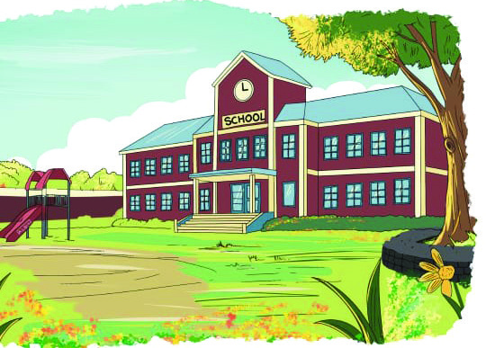
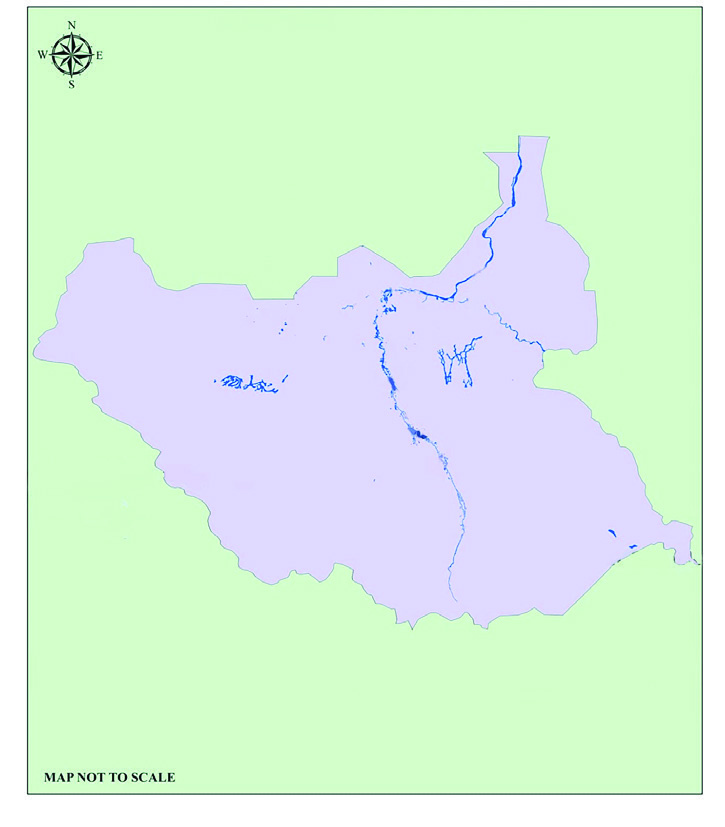
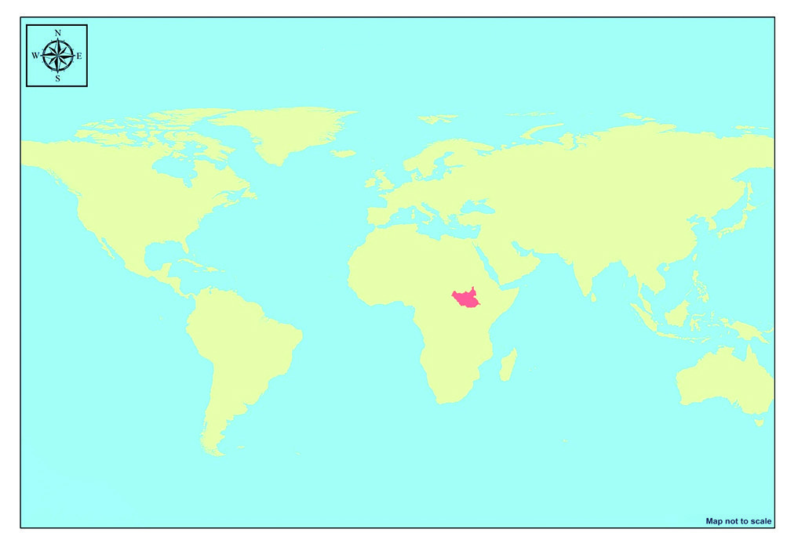
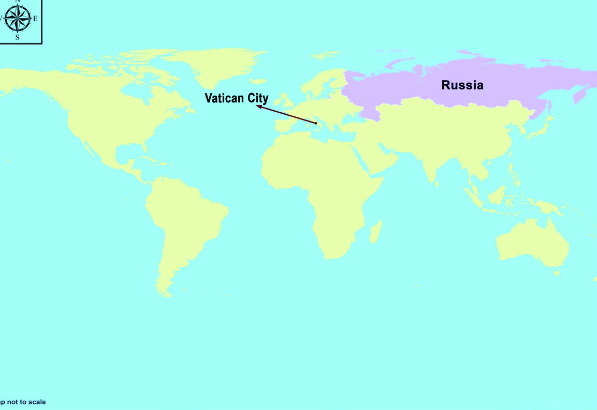
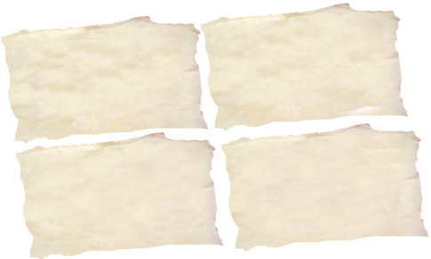
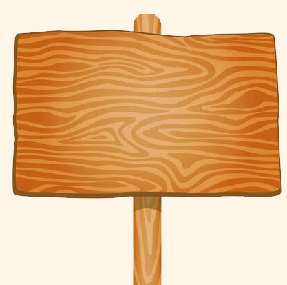

Social Science Class VI
Social Science Class VI
3
State and Government
We have discussed what
each person would do
first if they get a chance
to go out. Dad wants to
go out and see
Mr. Vossen, Peter wants
to go to town and see
a movie, and I find
freedom itself a great joy.
So I can't think of what
to do. But I know one
thing, that what I like above
everything is a house of
our own, and freedom
of movement. Then, my
school and my studies. I
love my country. I love this
language... I wish to live
and work here.
Source -'The Diary of a Young
Girl -Anne Frank'
(Independent Translation)
The above lines were written by Anne Frank in her beloved diary named 'Kitty'. She had
to lead a life hiding in a small, confined room in her own country, because of Hitler's
military attack.
Here, what all does Anne Frank wish for?
• To lead a life of freedom
• ................................................................
• ................................................................
• ................................................................
What all does our native land guarantee us? Discuss.
Page 37

Page 38


Social Science Class VI
Social Science Class VI
38
Part I
State and People
Covid 19: India declares
that the state is all set to
face any situation
Republic Day celebrations: India
tightens security along the borders
Health Insurance
Cards to be ensured
for all across the
country
Food price hike: State to adopt
immediate steps to increase
production
Solution for energy crisis faced by
people: New solar energy plants
to be dedicated to the nation
today
Look at the collage given above. Here, who fulfills the demands of the people and
ensures their security?
What are the services provided by the state to the people?
• Protection to life and property of the people
•
•
•
It is the state that enables an environment for the
people to live with liberty, dignity and without
fear. Let's get familiarised with more features
of state.
What is State?
State is the highest socio-political institution
formed by the people. A group of people living
permanently within a definite territory with a
sovereign government is a State. Population,
territory, government and sovereignty are the
factors that form a state. It is the responsibility of
the state to make laws and to ensure the welfare
of its people. The state protects the rights of the
people. Moreover, it defines the responsibilities
of the people towards the state.
The State and Political
Science
Political Science is the scientific
study of the state. It was in
ancient Greece where the study
of the state started first. The
City-States were the basis for the
study of the state. Greek thinkers
like Socrates, Plato and Aristotle
initiated the thoughts related to
state. It was Aristotle, the Father
of Political Science who used the
term ‘politics’ for the first time.
‘Politics’ is a well-known work
authored by him.
Page 39



39
Social Science Class VI
Social Science Class VI
State and Government
Let us examine each component of the state in detail.
Population
Look at the pictures given above.
Which one of these can be considered a ‘school’ in the complete sense of the term?
For a school to become a 'school' in the real sense, there should be children, teachers,
and staff, along with other facilities. The concept of school becomes complete when they
work together harmoniously and actively.
The state is also like this.
Without people, a state cannot exist. But, the number of people required to form a state,
has not been fixed. The population of a state can include people belonging to different
religion, class and colour. People become a part of a state when they stay together with
mutual dependence, common interests and collective consciousness.
Can you find out?
The country with the highest population
: .................................................
The country with the lowest population
: .................................................
State
The Greeks referred to city-states as ‘polis’ whereas the
The Greeks referred to city-states as ‘polis’ whereas the
Romans used the term ‘civitas’. It was the Italian philosopher
Romans used the term ‘civitas’. It was the Italian philosopher
Niccolo Machiavelli who used the term ‘state’ in its modern
Niccolo Machiavelli who used the term ‘state’ in its modern
sense, for the first time. The English word ‘state’ came into
sense, for the first time. The English word ‘state’ came into
existence from the term ‘status’ which was popular among
existence from the term ‘status’ which was popular among
Teutons, the ancient tribes in Germany.
Teutons, the ancient tribes in Germany.
Niccolo
Machiavelli
Fig 3.1 (A)
Fig 3.1 (B)
Page 40




Social Science Class VI
Social Science Class VI
40
Part I
Draw
against the True statement and
against
the False statement.
The required population for the formation of state has been
fixed as one lakh.
People belonging to different religion and class can be part of
the population of a state.
The state is the highest political institution established by people.
A state can exist without people.
Territory
Map 3.1
Map 3.2
Complete the worksheet.
The map of South Sudan that was formed in 2011 is given above.
In which continent is South Sudan situated?
Which river enriches this country with water?
Identify and note down the countries that borders South Sudan.
North
East
South
West
South Sudan is a country that was formed from ten southern states liberated from Sudan,
the biggest country in Africa. From this, haven't you realised that a specific geographic
territory is necessary for the formation of any state, like South Sudan?
For the existence of a state, a permanent and well-defined territory is essential. But, the
South Sudan
Uganda
Ethiopia
Sudan
Kenya
Central
African
Republic
Democratic Republic
of the Congo
South Sudan
Nile River
South Sudan
Page 41




41
Social Science Class VI
Social Science Class VI
State and Government
area of territory for the formation of a state has not been specified. The land area, the
water bodies, the air space and the coastal areas of a country come under the jurisdiction
of that territory. Modern states are generally larger in territorial size.
Government
Examine the map in your Social Science Lab, identify the biggest country and
the smallest country in the world.
Covid 19: Government declares free ration
for all card holders
Government slashes price for life-saving
medicines
Government maintains vigil: Price `hike under
control
Daahaneer: New project for drinking water
distribution by Government
Look at the news given above.
The government plays a significant role in ensuring the welfare of the people in a state. It
is the government which helps to keep the relationship between the state and the people
active. A particular territory need not become a state just because it is inhabited by people.
A system called 'government' is essential to coordinate the resources and the people there.
The state is a permanent institution whereas the government keeps changing. Government
Prepare a note on the role played by the territory in the formation of a state.
Page 42


Social Science Class VI
Social Science Class VI
42
Part I
Civil war resolved:
Sri Lanka moves to
democracy
War scare: India assures
safe return of students
abroad
Welfare of the Aged:
France set for strict
implementation of the
law
India and China sign a
new cooperation pact
is an agency to form the policies of the state, express and execute them. The government
handles law and order, rule of law, defence, foreign relations, roads, bridges, drinking
water, electricity, education and the like.
Sovereignty
.......................................................................................
.......................................................................................
.......................................................................................
.......................................................................................
.......................................................................................
.......................................................................................
.......................................................................................
.......................................................................................
protects the sovereignty and unity of the state
Government
Look at the news headlines above.
Each headline gives the decisions made by the states in different fields using their power.
The supreme power of the state to take decisions without being subjected to external
interventions or pressure in any form is termed sovereignty. This is a unique characteristic
of the state. The state makes laws and takes political decisions as part of its sovereign
power. The state executes and protects its sovereign power through the government. Even
Complete the concept map, which includes the major responsibilities of the
government.
Page 43



43
Social Science Class VI
Social Science Class VI
State and Government
if there are people, territory and the government, state cannot exist without sovereignty.
Which of these given news
the sovereignty of the state is
maintained? Explain why. Prepare
a note.
Democracy being
toppled in Myanmar:
America warns of
intervention
Nuclear policy
country's internal
affair: No need of
interference from
other countries, says
India.
Write the basic components of state on strips and keep them in the bowl on
the table. Each one should take a strip. Those who got the same topic, form
groups. Each group discuss the topic they got. Present them in different ways
( posters, notes, speeches, panel discussion, role play etc.)
Panel Discussion
Theories on Formation of State
Not at all.
It is the various
contracts made
by the people
that led to the
formation of the
state
The strong
conquered the
weak by force and
established the
state.
None of these is
None of these is
correct. The state
correct. The state
was not built by
was not built by
anyone. It was
anyone. It was
formed as a result
formed as a result
of long term
of long term
evolutions.
evolutions.
Formation of State: Various Theories
We have discussed the different components of state. Now, let us examine how the state
was formed.
A panel discussion has been organised in the class on the formation of state. Look at the
way how the children expressed their opinions.
Page 44
Social Science Class VI
Social Science Class VI
44
Part I
Oriental
Administrative
Systems
Some of the characteristics of modern states were exhibited by oriental
administrative systems. The centres of river valley civilizations such as
Mesopotamia, Egypt and China are examples. People led an urban
lifestyle in these Bronze Age civilization centres.
Greek
City - States
It is the Greek city-states that exhibit the most similarity with modern
states. Athens, Sparta, etc. are examples.
In ancient times it was the tribal groups who showed, to a small extent,
some characteristics of political institutions. The formation of tribal
state was due to the influence of being born into the same clan, having
same interests and same economic activities.
Tribal
States
The
Roman
Empire
The administrative system, law and basic infrastructure that existed in
the Roman Empire showed similarities to that of modern states.
You have noticed the opinions expressed by the children related to the formation of the
state. They referred to the various theories that led to the formation of state. Shall we
complete the concept map given below?
The theory of Social Evolution is the most popular and the most widely accepted among
the theories of state formation. According to this, the state is not a construct by anyone,
but a result of the interaction of various components over a long period of time.
From Tribal State to Nation State
The nature of modern state is entirely different from that of the earlier states. Let us
examine the changes in the nature of states.
Agreements/contracts
made by people led to
the formation of the
state
Theory of Social
Evolution
Theory of Social
Contract
Force Theory
Theories of State
Formation
Page 45

45
Social Science Class VI
Social Science Class VI
State and Government
Feudal
States
Feudal states were formed after the decline of the Roman Empire.
The major characteristic of these states was feudalism. In these states,
the power hierarchy was divided into the King- the Lords and the
Farmers. The power of the king was limited. Administrative powers
were vested with the Lords.
Nation
states
Modern nation states originated in Europe. Logical thinking, scientific
temper and so on brought about changes in the social structure during
the Renaissance period. Industrial revolution, colonisation and national
consciousness also contributed to the growth of nation states. Gradually,
nation states came into existence based on factors like population,
territory, government and sovereignty.
Renaissance
Renaissance is the new awakening in the artistic and intellectual fields during
the 14th and 15th centuries in Italy and other European countries. The main
feature of this age is that humans were given more importance than religious
doctrines. Petrarch, Dante, Da Vinci and so on influenced the Renaissance
in various fields.
Feudalism
Feudalism is a social administrative system in which the lords exploited the
workers in their agricultural fields like slaves. The term ‘feudalism’ originated
from the German word ‘feud’ which means ‘a piece of land’. Feudalism existed
in Europe during the Middle Ages.
In the hierarchical system of king-lords-farmers, the power of the king
is limited.
Feudal state
Logical thinking, scientific temper, Industrial Revolution and national
consciousness led to the formation of these states
Bronze Age Civilization centres belong to this administrative system
People being born into same clan, having common interests and similar
economic activities are the features of this type of state
State and Government: Mutual Relationship
We have already recognized that in a state it is the government that carries out the
administration. Let us examine more features of it, shall we?
Complete the worksheet about the origin and development of states.
Page 46

Social Science Class VI
Social Science Class VI
46
Part I
Legislature
The major responsibilities
of the legislature include
making
laws
and
bringing about changes
in existing laws that are
required by the state.
The legislature has a
great role in controlling
the administration of the
state.
Executive
The laws made by
the
legislature
are
implemented and the
administration is carried
out by the executive.
The day-to-day activities
of the government are
executed by this organ.
Judiciary
The judiciary interprets
laws, resolves disputes
and
punishes
the
offenders. When the
Legislature makes laws,
the Executive executes
it. The disputes that
arise
during
these
processes are solved by
the Judiciary.
Organs of Government
Organs of Government
The government helps to keep the relationship dynamic between the people and the state.
State cannot exist without a government. The various laws, policies and programmes of
the state are executed through the organs of government. Let us examine what they are.
State
Government
Given below are the data collected by Kiran for comparing state and
government. Arrange them suitably in the table given below.
• It has sovereignty.
• It keeps changing.
• It is a broad concept.
• It is a permanent institution.
• It is a component of the state.
• All people are included in this.
• Administrators and officials are included in this.
• Sovereignty is executed through this agency.
Page 47


47
Social Science Class VI
Social Science Class VI
State and Government
For the effective functioning of the government, it is essential that these three organs
must act complementary to each other.
Examine the following news headlines given below. Identify, under the scope
of which government organs these headlines can be categorized into.
• Court Procedures to be Telecast Live, says the Supreme Court
• The Government Prepares for Strict Implementation of the Right to Ed
ucation Act
• Environment Protection: Amendment of Law soon
• Green Protocol to be Followed Strictly in Schools: Department of Educa
tion
• Revision of Traffic Rules: Court to be Informed of the Progress
• Parliament Approves Revision of Transport Rules
Extended Activities
• Conduct a study tour to the Legislative Assembly/ the District Collectorate/
a Court of Law to have a first hand experience about the functioning of the
Legislature or the Executive or the Judiciary.
• Conduct a seminar on the topic ‘From Tribal States to Nation States’ including
various stages and developments of state formation.
Sub Topics
♦ Tribal states
♦ Oriental administrative systems
♦ Greek city-states
♦ Roman Empire
♦ Feudal states
♦ Nation states
• An interview has been scheduled with the representatives of the Legislature,
the Executive and the Judiciary to learn more about these. Prepare a
questionnaire in groups and conduct the interview.
We have become familiar with the origin and evolution of the concept of state. Our states
have developed from tribal states of ancient times to the level of modern nation states
that are based on democracy. The modern nation states which give more importance to
equality, liberty and sovereignty are also a sign of human progress.